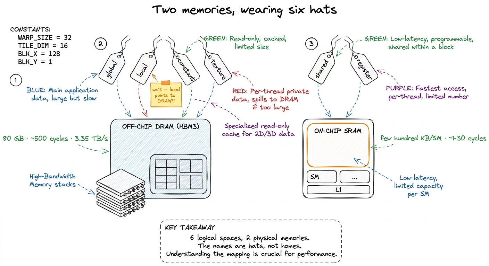
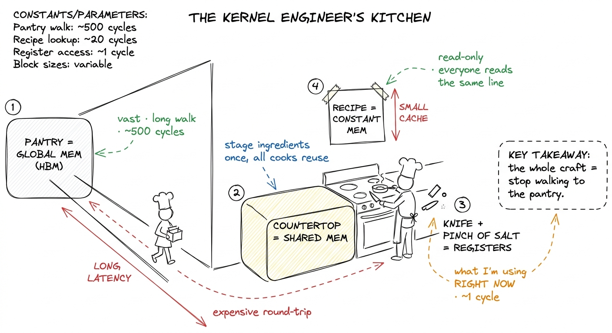
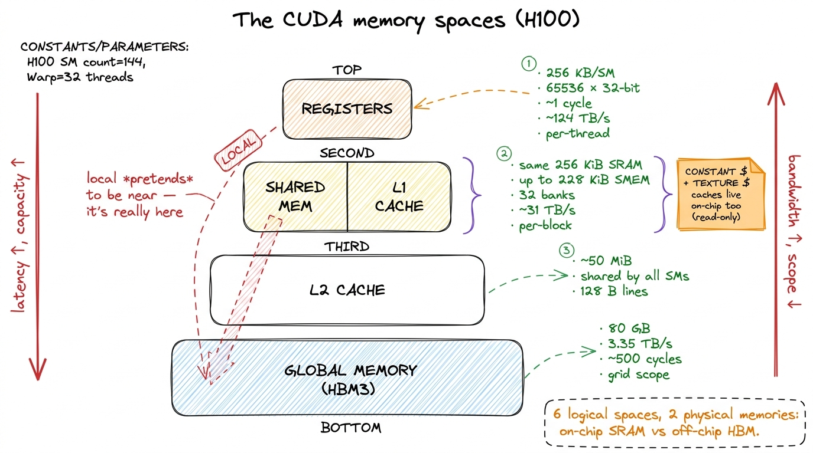
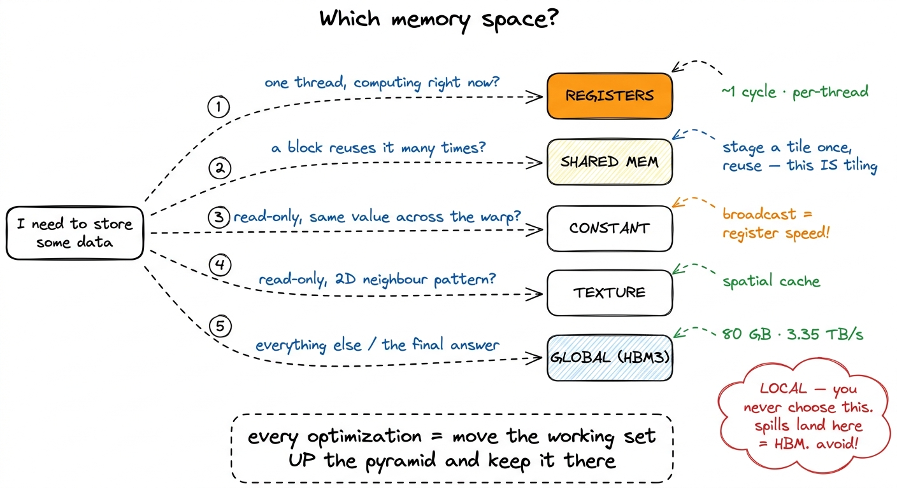
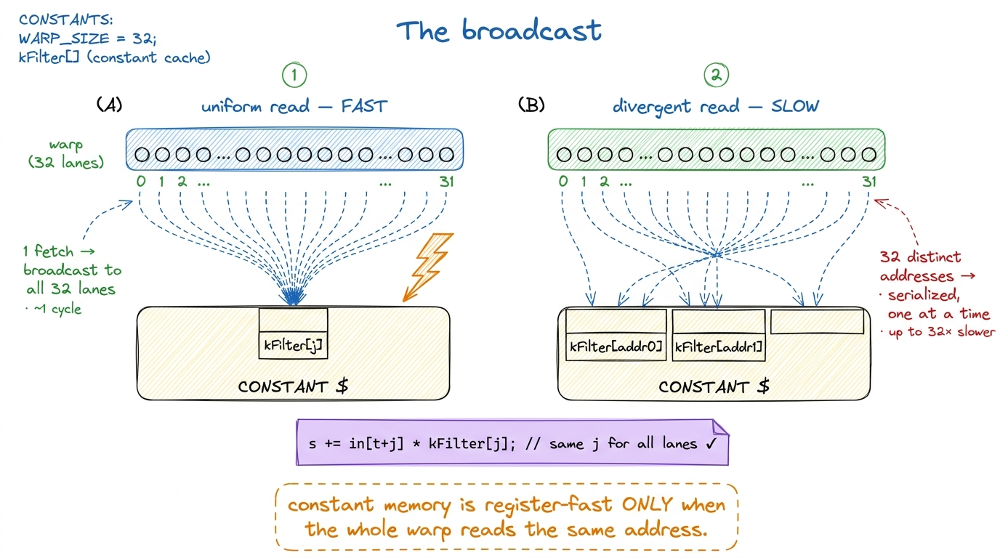
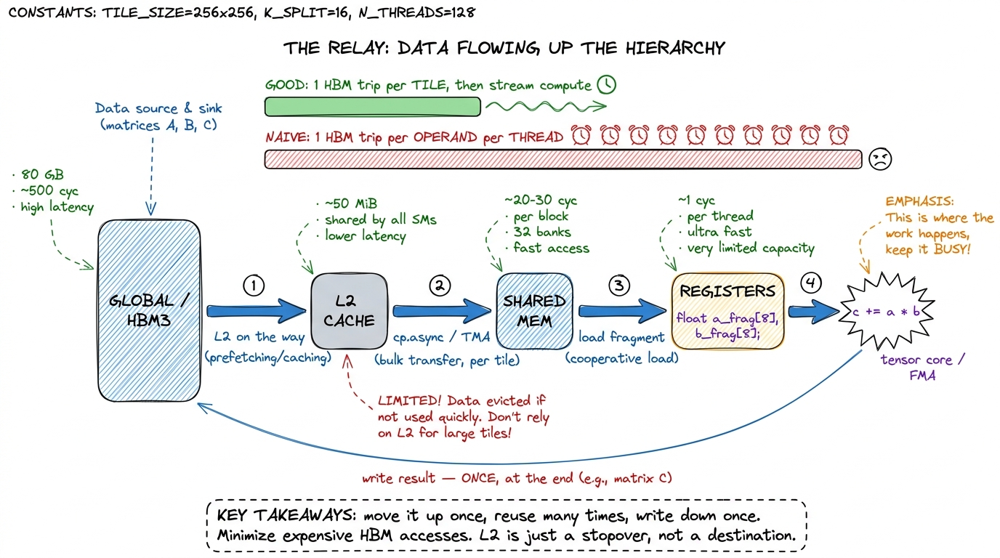
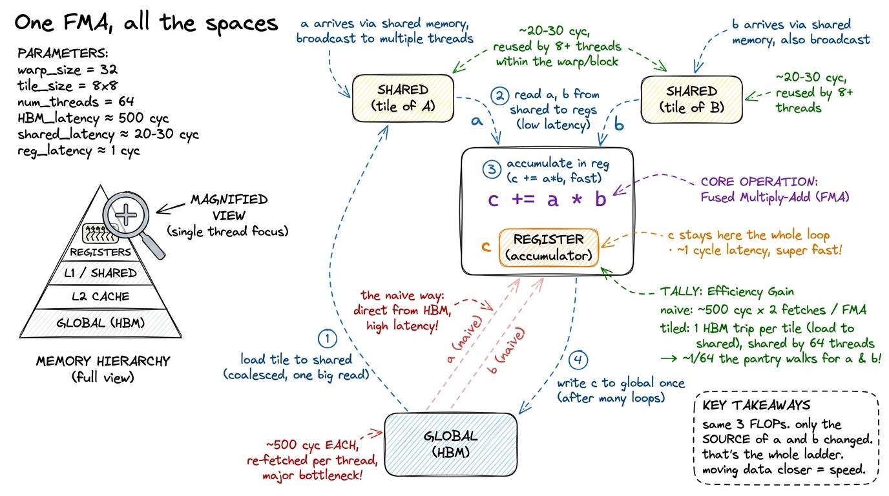
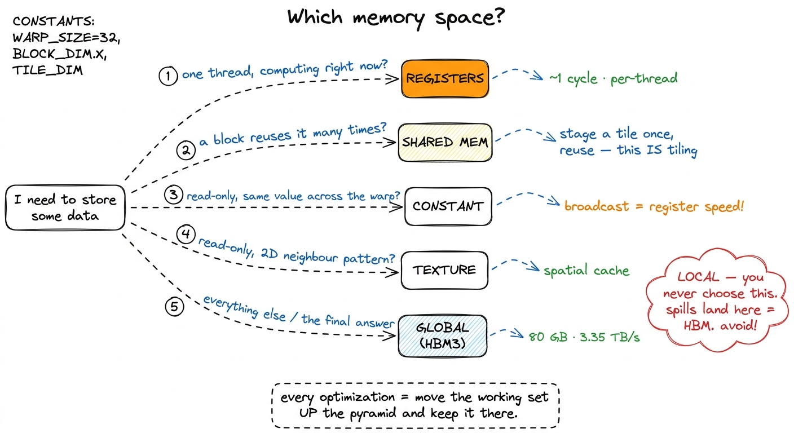

The memory spaces
Here is a question that sounds too simple to be interesting, but turns out to decide almost everything about how fast your kernel runs: when you write float x = A[i]; inside a CUDA kernel, where does A actually live?
You might answer "in memory." But a GPU does not have memory the way a laptop has memory — one big pool you allocate from and forget about. A GPU has memories, plural. Half a dozen distinct address spaces, each with its own latency, its own bandwidth, its own scope (who is allowed to see it), and its own rules. And the single most consequential fact about that line of code is which of those spaces A lives in — because that one choice can swing your kernel's throughput by two orders of magnitude.
That is not an exaggeration. The whole GEMM optimization ladder on this site — from the naive kernel that reaches 1.3% of cuBLAS to the warptiled one that reaches 93.7% — is, underneath all the tiling tricks and vectorization, one long argument about moving data out of the slow spaces into the fast ones and keeping it there. If you understand the memory spaces, the entire ladder stops feeling like a bag of tricks and starts feeling inevitable.
So before we write another kernel, we need the map. This article answers three questions, in order. What are the memory spaces? Where do they physically live (this is where it gets surprising)? And how does that map drive every optimization you will ever do? A newcomer can start right here — I will build the whole picture from the ground up.
First, the only two memories that physically exist
Let me give you the honest physical picture before any CUDA vocabulary, because the vocabulary hides it.
Strip away the names, and an H100 has exactly two kinds of memory that matter:
- Off-chip DRAM. This is the 80 GB of High-Bandwidth Memory (HBM3) — stacks of DRAM chips sitting next to the GPU die on the same package, connected by a very wide bus. It is large and comparatively slow. A read takes roughly 500 clock cycles to come back.1 "500 cycles" is a round number for the latency — the time from asking for a byte to getting it. Bandwidth is a separate axis: HBM3 delivers ~3.35 TB/s in aggregate. High latency and high bandwidth coexist because the memory system is deeply pipelined — many requests are in flight at once. This is exactly why GPUs oversubscribe threads: while one warp waits 500 cycles, others run.
- On-chip SRAM. This is small, fast memory etched into the GPU die itself, right next to the compute units. A read can come back in as little as one cycle. There is not much of it — a few hundred kilobytes per Streaming Multiprocessor (SM), the GPU's basic compute tile.
That is the whole hardware story. Two memories: far-and-vast, or near-and-tiny. Every "memory space" CUDA gives you is a naming convention layered on top of those two physical things.2 There is arguably a third physical tier: the register file is also SRAM, but it is a fundamentally different structure from a cache — a multi-ported, statically-addressed array wired directly into the datapath. Calling it "just SRAM" undersells how special it is. We give it its own row below.
Hold onto this, because it is the source of every surprise in this article. Two of the six logical spaces have names that lie about where they physically are.

figure rendering · The mental model to keep for the whole article. There are only two reaAn analogy to carry the whole way through
Before the technicalities, here is the picture I keep in my head. It will do a lot of work.
Imagine you are cooking at a stove.
- The giant walk-in pantry down the hall is global memory (HBM). Everything is in there. But every trip costs you a long walk.
- The shared countertop by your stove is shared memory (on-chip SRAM). You stage the ingredients for the current dish there so you and your fellow cooks stop running to the pantry.
- The knife in your hand and the pinch of salt between your fingers are your registers — whatever you are working on this instant. Instant access, but you can only hold a few things.
- Constant memory is the recipe card taped above the stove: read-only, and every cook glances at the same line at the same time.
The entire craft of kernel engineering is: stop walking to the pantry. Move your working ingredients onto the countertop, keep the active one in your hand, and touch the pantry as few times as you possibly can. Every optimization in the GEMM ladder is a version of this one move. Keep the kitchen in mind; I will point back to it.

figure rendering · The mental model as a kitchen. Global is the far pantry; shared is theThe six spaces, one at a time
Now let me walk each of the six spaces CUDA exposes — global, shared, register, local, constant, texture — and say plainly which of the two physical memories it lives in.
Global memory is HBM. This is the big pool. cudaMalloc hands you a pointer into it; every block and every thread in the grid can read and write it; it persists for the life of the allocation. It is the space your input data arrives in and the space your answer must be written back to — you cannot avoid it. It is also the slowest (hundreds of cycles) and the one whose 3.35 TB/s aggregate bandwidth you will spend your career fighting to saturate. Because it is the countertop's opposite — the far pantry — it gets its own deep-dive in HBM and global memory, and reads from it go through the L2 cache on the way.
Shared memory is on-chip SRAM, private to a single thread block, and here is the first genuinely important fact: it is physically the same array as the L1 data cache. On H100 the two share a 256 KiB pool per SM, and you can carve out up to 228 KiB of it as explicitly-managed shared memory, leaving the rest as L1.3 Those 228 KiB are not free-for-the-asking. You opt in past the 48 KiB default with cudaFuncSetAttribute(..., cudaFuncAttributeMaxDynamicSharedMemorySize, ...), and asking for the max forces a single block per SM, which can crush your occupancy. Also, the pool cannot be handed out to shared memory entirely — a slice (roughly a KiB per block) is reserved for the driver. Whatever you do not claim stays available as L1. Its latency is roughly 20–30 cycles — an order of magnitude below global — and its bandwidth is enormous, around 31 TB/s, because it is split into 32 banks you can read in parallel. This is the workhorse of tiling, the countertop in our kitchen, and it gets its own article: shared memory and L1.
Registers are the fastest storage on the chip — roughly one cycle, no addressing, wired straight into the arithmetic units, running at something like 124 TB/s. Each SM has a 256 KB register file (that is 65536 32-bit registers), partitioned among all its resident threads. A single thread may use at most 255 of them. Registers are private to one thread and vanish when the thread exits — the knife in your hand. See the register file.4 "Private to one thread" has one blessed exception: warp shuffle instructions (__shfl_sync) let threads in the same warp read each other's registers directly, without going through shared memory. It is the fastest way to move a value between lanes, and FlashAttention leans on it for the softmax reduction.
Local memory is the trap. It gets its own section below, because it is the number-one source of mystery slowdowns. Spoiler from the physical picture above: despite the name, it lives in HBM.
Constant memory is a small (64 KB) read-only region of global memory, but backed by a dedicated per-SM constant cache. It is optimized for exactly one pattern — every thread in a warp reading the same address — and for that pattern it is startlingly fast. The recipe card on the wall.
Texture memory is another read-only view onto global memory, routed through the texture cache with hardware interpolation and 2D-spatial locality — a holdover from graphics that still earns its keep in a few niches.
The table you should memorize
Here is the whole map in one grid. Read it as one sentence: the closer to the thread, the faster and smaller and more private.
| Space | Physical location | Scope | Latency | R/W | Cached |
|---|---|---|---|---|---|
| Register | SM register file (SRAM) | one thread | ~1 cycle | R/W | n/a |
| Shared | SM L1 SRAM (up to 228 KiB) | one block | ~20–30 cyc | R/W | n/a (is the cache) |
| Constant | HBM + constant cache | grid (read-only) | ~1 cyc on hit | R | yes, broadcast |
| Texture | HBM + texture cache | grid (read-only) | tens on hit | R | yes, spatial |
| Local | HBM (global) | one thread | hundreds | R/W | L1/L2 |
| Global | HBM (DRAM) | whole grid | hundreds | R/W | L2 (~50 MiB) |
Two rows in that table are lies of a sort — the two where the logical name and the physical reality diverge. Local memory says "local" but lives in the farthest, slowest DRAM. Constant memory says "global-sized and slow" but can beat shared memory for the right access pattern. These two surprises are worth their own sections, so let me take them one at a time. If you understand why these two are surprising, you understand the whole map.

figure rendering · The memory pyramid. Fast and small at the top, slow and vast at the boLocal memory is really global memory
This is the single most common source of mystery slowdowns for people learning kernels, so let me be very precise.
Local memory is per-thread private storage. But read the word "local" carefully: it describes the scope — who can see it — not the location. Physically, local memory is carved out of global HBM. A local-memory access is a global-memory access wearing a friendlier name, and it costs exactly what a global access costs: hundreds of cycles.5 It is at least cached in L1 and L2 on the way down, so a hot local variable that stays resident in cache is not as catastrophic as a fully uncached HBM round-trip. But you are now betting on the cache to rescue you from a problem you could have avoided entirely — and under register pressure the cache is usually already busy.
Here is the thing that trips everyone up: you never explicitly ask for local memory. There is no __local__ keyword you type by mistake. The compiler decides to use it, silently, in two situations.
The first is register spilling. Registers are a fixed budget — 255 per thread, and often far fewer if you want good occupancy. If your kernel needs more live values at once than that budget allows, the compiler has nowhere to put the overflow on-chip, so it spills the extra values to local memory. Your fast registers quietly become slow HBM. In the kitchen: you ran out of hands, so you keep setting things down and walking back to the pantry to fetch them again.
The second is indexed private arrays. This one is subtle. Registers have no addresses — you cannot compute register[i] at runtime, because there is no i-th register to index. So if you declare a small private array and index it with a value the compiler cannot figure out at compile time, it cannot keep that array in registers. The whole array falls to local memory.
__global__ void danger(const float* in, float* out, int n) {
float acc[32]; // wants to be registers...
for (int i = 0; i < n; ++i) // ...but n is a runtime value,
acc[i % 32] += in[i]; // so acc[] is indexed dynamically ->
// acc[] gets SPILLED to LOCAL memory = HBM. Every access is a global load.
out[threadIdx.x] = acc[0];
}Let me put a number on how bad this is, from basics. Say that inner line runs n = 1024 times. Ideally acc[i % 32] is a register: ~1 cycle per access. Spilled to local memory, each access is a load and a store into HBM at roughly 500 cycles each. That is a ~500× penalty per access, hidden behind an innocent-looking +=. The arithmetic is trivial; the memory is the entire cost. This is what "a variable you thought was free is the slowest thing in your kernel" means, concretely.
How do you catch it? Two tells, and you should learn to look for both reflexively.
Ask nvcc for -Xptxas -v and it prints, per kernel, a line like N bytes stack frame. A non-zero stack frame is your local-memory footprint — the compiler is telling you, in plain text, that it had to spill. Then inspect the SASS (the actual machine code — see PTX vs SASS): you will find LDL and STL instructions (load-local, store-local) sitting exactly where you expected pure arithmetic. Nsight Compute counts that local traffic against your HBM budget so you can see it eating your bandwidth.
The fix is almost always one of three moves: reduce register pressure so nothing spills; unroll loops (with #pragma unroll) so array indices become compile-time constants and the array can live in registers; or shrink the tile so the whole working set fits in the budget. All three are versions of "keep the ingredients in your hands, don't set them down."

figure rendering · Register spilling, side by side. What you wrote (left) versus what theConstant memory and the broadcast trick
Now the opposite surprise. Constant memory looks unpromising on paper — it lives in HBM, it is tiny (64 KB), it is read-only. And yet, used correctly, it behaves like the fastest thing you have. Why?
You declare it at file scope with __constant__, fill it from the host before the launch, and the device may only read it. What makes it special is a feature called broadcast, and to see why broadcast matters we have to think about what a warp actually is.
A warp is a group of 32 threads that execute the same instruction in lockstep (see threads, warps, blocks, grids). When those 32 threads all hit a memory instruction at once, the hardware has to service 32 requests. Normally that means 32 addresses to look up. But suppose all 32 threads read the exact same constant address — say every thread wants kFilter[j] for the same j. The constant cache notices they are all asking for one value, fetches it once, and broadcasts that single value to all 32 lanes in one shot. One fetch, 32 answers, register-fast.
That is the recipe card taped above the stove: every cook glances at the same line at the same time, so one card serves the whole kitchen. It is exactly the right structure for coefficients that every thread needs identically — a scaling factor, filter weights, a shared dimension. Put those in __constant__ and you get register-speed reads for free.
But there is a sharp flip side, and it is the whole reason constant memory is a specialized tool and not a default. If the 32 threads read different constant addresses, the cache cannot broadcast — there is no single value to hand out. It serializes: it services distinct address 1, then address 2, then address 3, one after another. A fully-divergent warp, where all 32 lanes want different addresses, costs up to 32× a single read. Constant memory rewards uniform access and punishes divergent access, hard. That one property is the entire decision rule: use it only when the whole warp reads the same address.

figure rendering · The broadcast, before and after. One shared address for the whole warp__constant__ float kFilter[64]; // fits in the 64 KB constant space
__global__ void conv(const float* in, float* out) {
float s = 0.0f;
#pragma unroll
for (int j = 0; j < 64; ++j)
s += in[threadIdx.x + j] * kFilter[j]; // every lane reads kFilter[j]
// all 32 lanes hit the SAME address each iteration -> one broadcast, ~1 cycle
out[threadIdx.x] = s;
}Notice what makes this work: the index j is the same for every thread in the warp. The thread index only varies the in[...] part, which is ordinary global memory. So kFilter[j] is a textbook broadcast, and this convolution gets its filter weights at register speed while paying nothing extra.6 If you flipped the roles — indexed the constant array by threadIdx.x so each lane read a different weight — you would hit the serialized path and it would be slower than just putting the array in shared memory. The tool is only fast for its one intended pattern. That is a recurring theme in kernel work: specialized hardware paths are gifts, but only if your access shape matches them.
Texture memory, briefly
Texture memory is the graphics inheritance. It is another read-only path into global memory, routed through the texture cache, which is tuned not for 1D contiguity but for 2D spatial locality — the idea that if a thread reads pixel (x, y), its neighbors will soon want (x±1, y±1). It also throws in free boundary clamping and hardware linear interpolation, both leftovers from sampling images.
For GEMM and most deep-learning kernels you will rarely reach for it — your access patterns are 1D-contiguous rows and columns, which the ordinary path handles fine. Texture memory earns its keep in stencils, image resampling, and irregular 2D gathers, where the texture cache's 2D-locality model actually matches how you touch memory. Know it exists; move on.
Where this is going: L2 and distributed shared memory
Two spaces sit between the six classic ones, and they matter more every hardware generation, so I want to name them rather than leave them as a mystery when you meet them later.
The L2 cache is a single ~50 MiB pool of SRAM shared by all the SMs, sitting between them and HBM (details in the L2 cache). Every global and local access passes through it. You do not manage it directly — it is a hardware cache — but it is the reason a value re-read soon after its first read can come back far faster than the "500 cycles" headline suggests. In our kitchen it is a shared prep-station in the middle of the room: not your countertop, but much closer than the pantry.
The newer one is distributed shared memory (DSMEM), introduced on Hopper. It lets a thread block read the shared memory of another block in the same cluster, over a fast on-chip network, without bouncing through global memory. It is slower than your own block's shared memory but far faster than HBM — a way for neighboring cooks to reach across to each other's countertops. It shows up in the newest GEMM and attention kernels (Hopper TMA leans on the same cluster machinery), and it is the reason the "one block, one countertop" story is starting to blur at the top of the ladder.
Put the whole hierarchy in one line and it reads like a relay: data flows HBM → L2 → shared → registers on the way in, computes at the top, and flows registers → global on the way out. The good kernels do the leftward-to-rightward move once per tile and then stream compute; the naive kernel does the full HBM round-trip per operand, per thread.

figure rendering · The memory hierarchy as a relay/pipeline. Data climbs HBM → L2 → shareZoom in: one thread, one FMA, and the whole hierarchy in miniature
Let me make all of this concrete by shrinking the picture down to a single thread doing a single multiply-add — the atom of GEMM — and watching every memory space light up.
The thread's job is c += a * b. Walk it:
- The operands
aandbhave to be in registers for the arithmetic unit to touch them. Nothing computes out of any other space. So the real question is only ever: how didaandbget into registers, and how expensive was that trip? - In the naive kernel,
acame straight from global memory — a ~500-cycle walk to the pantry — and so didb, and the very next thread over fetched almost the same row ofAagain, and the one after that again. Same ingredients, fetched from the far pantry over and over. - In the tiled kernel, the block first cooperatively stages a tile of
Aand a tile ofBinto shared memory — one set of pantry trips, shared by everyone. Now each thread'saandbcome from the countertop at ~20–30 cycles, and each byte gets reused by many threads. The accumulatorclives in a register the whole time and only touches global once, at the very end, when the answer is written back.
That is the entire ladder in one FMA. Same three FLOPs either way. The only thing that changed is which memory space each operand came from — and that is the difference between 1.3% and 93.7% of cuBLAS.

figure rendering · The whole hierarchy in one multiply-add. Zoomed to a single thread, thThe mental map, and how it drives the ladder
Step back, and the six spaces collapse into one short decision procedure. Ask, for each piece of your working set, one question: how high up the pyramid can this live?
- Global memory is where your data starts and where the answer must end up. You cannot avoid it — only minimize how many times you touch it. The far pantry.
- Registers hold the values a thread is computing on right now. The knife in your hand.
- Shared memory holds the tile a whole block cooperates on, so
Nthreads reuse each byte instead of each re-fetching it from global. This is the entire idea of tiling. The countertop. It is why kernel 3 jumps to 12.8% the moment it introduces a shared-memory tile, and why the tiled kernels past it climb into the 60s and 70s. - Constant memory holds the small, uniform, read-only coefficients every thread shares. The recipe on the wall.
- Texture memory is for the day your access pattern is genuinely 2D.
- Local memory is what you get when you weren't paying attention — a spill, dropping your ingredient back into the far pantry.

figure rendering · The decision procedure. Kernel engineering as one flowchart: what is tThe predict-then-measure habit from the three regimes plugs in directly here. Before you ever run the profiler, name the space each piece of your working set lives in, and ask whether it could live higher. When the naive GEMM kernel does 2N FLOPs but issues 2N global loads per thread, the diagnosis is not "the math is slow" — the math is nothing. It is a memory-space failure: the row of A and the column of B are being re-fetched from HBM by every thread, when they could be staged once in shared memory and reused by the whole block. Every cook running to the pantry for the same onion.
That single reframing — stop touching global, stage it on-chip — is the engine behind almost every rung of the ladder that follows, and it is why the memory spaces are the first thing to learn, before any specific kernel. Next we make the on-chip pool concrete in shared memory and L1, where those 228 KiB and 32 banks stop being trivia and become the thing you actually tune. And once you are moving data through shared memory in bulk, the very next question — how do you get it there without wasting bandwidth? — is memory coalescing.